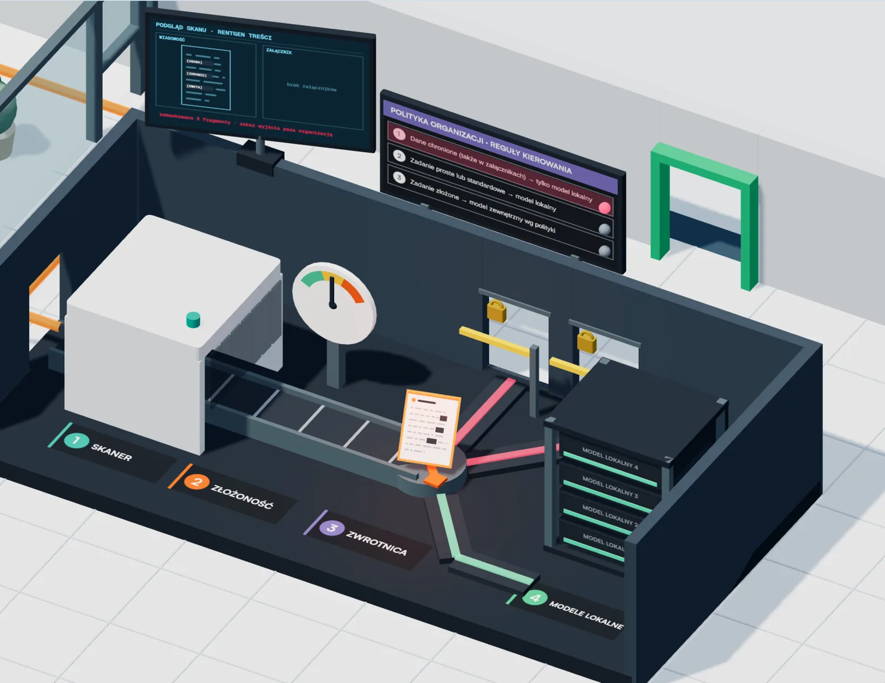
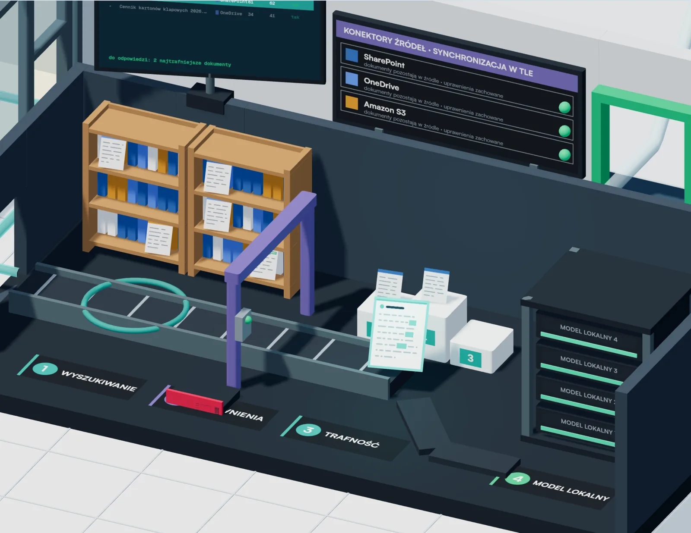

Zajrzyj do środka i zobacz, co dzieje się z Twoim pytaniem
Każda podróż prowadzi od stanowiska pracownika, przez serwer organizacji, z powrotem do odpowiedzi. Możesz oglądać ją w trybie Auto albo przechodzić krok po kroku.
-

1Klara od środka
bezpieczny (i inteligentny) chat AI -

2Zagłoba od środka
inteligentny asystent wiedzy
Symulacje poglądowe na danych przykładowych (fikcyjne osoby, dokumenty i firma). Nie wywołują rzeczywistych modeli.